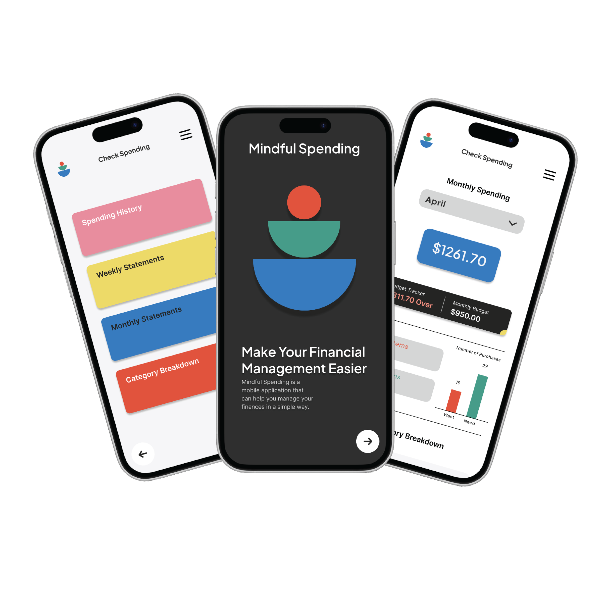
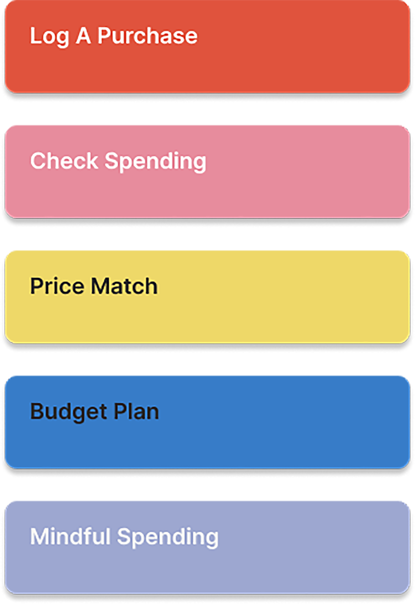
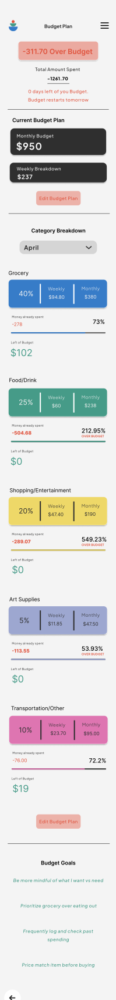
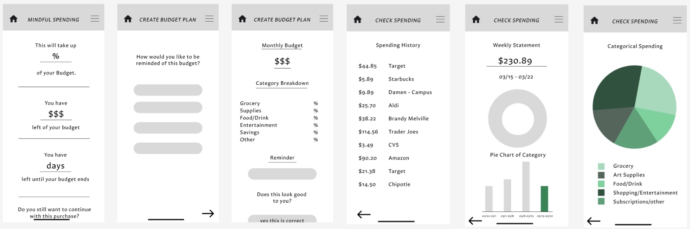
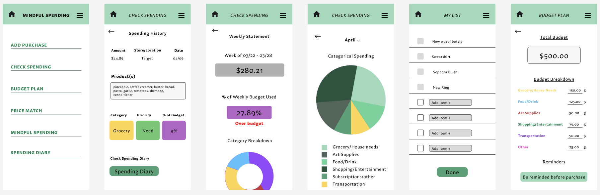

A budgeting app that turns every purchase into a quick gut-check: was this a want or a need? Mindful Spending makes budgeting feel less like punishment and more like a habit.

Most budgeting apps tell you what you spent — after it's already gone. They're great at accounting and terrible at intervention. The moment that actually matters, the one right before you tap "buy," gets no attention at all.
Move the reflection to the point of purchase. Log a buy in seconds, label it want vs. need, and capture how it felt. Over time those tiny moments roll up into spending patterns, category breakdowns, and a budget that adjusts to real behavior.
Every screen feeds the same loop — capture, reflect, review — so good habits compound instead of nagging.
Amount, product, store, count — a friction-light form so logging never feels like a chore.
A single forced choice plus an optional mood reflection turns spending into a self-aware moment.
Spending history, weekly and monthly statements, and category breakdowns surface where money really goes.
Set category budgets, save wants for later, and check for a better price before committing.
Park impulse buys on a list and revisit them — most "wants" quietly disappear after a week.
A live over/under card keeps the monthly target visible without burying it in menus.
Log a purchase, call it a want or a need, reflect on how it felt — and watch it land at the top of your spending.
The final high-fidelity flows — same friendly language as the original, with tightened spacing, type, and hierarchy.


The review side scrolls — full spending history, weekly statements, category breakdowns, and budget allocation, each readable at a glance.



The redesign started as greyscale wireframes and mid-fidelity flows, then earned its color and hierarchy screen by screen.

Early wireframes
Mid-fidelity flowsCoral anchors the brand and flags wants and overspend; green signals needs and healthy habits. Blue, yellow, pink and periwinkle code the home paths and every chart category, while a near-black dark surface carries the menu and budget cards. The stacked-bowl mark keeps the whole thing friendly.
The redesign keeps the original's friendly character while sharpening the moments that drive the habit loop: a faster capture form, a clearer want/need decision, and a spending dashboard you can read at a glance.
Barcode-scan price matching, shared household budgets, and a weekly "wants you skipped" recap that turns restraint into a visible, satisfying number.